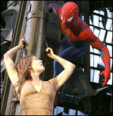

Jul13
SimTower, Yoot Tower
I’ve been playing the heck out of SimTower as of late, but I just found the sequel — Yoot Tower — at The Underdogs. You can download it for free, it’s 52 megs.
¨


 |
This is the blog of a one Ben Wilson, a Louisville, Kentucky native who enjoys baseball, beer, music, bikes, things that fly and good food. By day he pushes pixels and makes the Internet happen for a local advertising agency. His wife, Kelly is an Ironman, and his baby Amelia is the cutest thing ever. |
I’ve been playing the heck out of SimTower as of late, but I just found the sequel — Yoot Tower — at The Underdogs. You can download it for free, it’s 52 megs.
From the Chicago Sun Times’ Love’s life spirals further down:
Love was admitted to Bellevue Hospital in New York on Friday — arriving on a stretcher, dressed only in a lace-trimmed camisole and a pair of handcuffs.
I’ll admit to never having really cared for Courtney Love, but damn! She’s really let herself go. Sad to see anyone make a tumble like this.
That is what a certain recent MetaFilter post asked. The whole “is black the new white?” thing is terribly played, but yes, it might be true. At least, I’d like to think so. The MetaFilter post linked an article at the New York Times entitled “Not Funnies”, and interviews a number of prominent graphic novelists including Alan Moore, Art Speigelman, Joe Sacco, and Chris Ware. Pretty interesting read for those interested in knowing why graphic novels “aren’t funnies” or “comics” as you might have assumed.
I think this line really sums it up: “[the next new thing, the new literary form] might be comic books. Seriously.”
I’m not going to summarize the article for you, but safe to say it will change your idea of why graphic novels are serious literature (not to say that superhero-style comics aren’t serious, but c’mon folks).
Further, Hunter sent me a link to a great interview with Grant Morrison, a heavy-hitter in the “comics” industry. He makes some salient points regarding the innovation that comics/graphic novels can and must make to stay relevant.
In any case, next time you are in your local Barnes & Nobles, ask your friendly bookseller to point you in the direction of the Graphic Novels section. Have a look-see.
update: I forgot to add this little snippet from the NYTimes article. Regarding Alan Moore’s (
From Hell) current project… “Right now, he is working on a pornographic graphic novel, ‘Lost Girls,’ in which the main characters are the Alice of ‘Through the Looking Glass,’ now known as Lady Fairchild and a laudanum-addicted lesbian; the slightly repressed Mrs. Harold Potter, nee Wendy Darling, from ‘Peter Pan’; and the randy Dorothy Gale, from ‘The Wizard of Oz.’” That, my friends, ain’t no superhero book.
Dear readers, I have changes up the styles a little bit. The new “default” theme is what used to be the “blue” theme. And the old “default” is now the “simple” theme.
What? You didn’t even know you could change the theme for the site? Why sure you can, doodarino! Look for the THEME dropdown list and choose one. Dependent on the theme you have chosen, this should be on the left or the bottom of the page.
WOXY is returning to the digital airwaves this morning ladies and gentiles at 10 A.M. EST! As previously mentioned here, here and here, WOXY was a great FM station out of Cinci that was by all means “independent” and family-owned. They decided to sell out after many years of serving the public, and sadly the webcasting stream went with it. That is, until now! Some very kind folks swooped in to save the webcasting portion of it (which, I might add, was terribly popular).
News Hounds is to cable news networks what Television without Pity is to uh, well, television (but not cable news networks). They recap cable news programs summarizing interesting tidbits throughout the day, so you don’t have to sit through it. Both TV Without Pity and News Hounds can smell bullshit and then promptly skewers it. With TV without Pity, the comedy usually arises from the witty summaries. In the case of the couple of stories I’ve read on News Hounds, the comedy is usually provided by the shouting, derisive gasbags. One cool thing is that they’ve got it categorized by both network and by show. I suggest you check it out.
Now for a little foot-notery. Thanks to Drudge, I was alerted to a (unnamed by Drudge) documentary about Fox News’ “Fair and Balanced” coverage called Outfoxed that will be debuting in New York very soon. Having searched the google, I found the site, and they linked to News Hounds. Outfoxed and News Hounds, by the way, were and are supported by MoveOn.org. Further, Outfoxed seems to be compiled of raw satellite footage much in the same way Brian Springer’s brilliant Spin (1993) was, regarding Gulf War v1.0. You can download Spin in it’s entirety at Illegal Art, which is brilliant in and of it’s own right.
That is all, hippies, good night.
Again Pitchfork reports more good news for people who like the rock. The White Stripes are readying a rarities album, among other things. Those other things include releasing the bootlegged and awesome John Peel sessions they did (they have done two so far, and the first I literally listened to on a loop for a week back in 2001), as well as a DVD and possibly some back-catalog stuff from the “early days”. Huzzah!
According to an article at Pitchfork, there is a book about Neutral Milk Hotel (a band) in the works. Oddly enough I just managed to get my hands on their first album On Avery Island just recently. A few months back the venerable Mr. Cooper implored me to listen to the positively riveting and mind-blowingly awesome second album In an Aeroplane Over the Sea after he himself was given a copy by a generous friend.
The circuitous route by which Neutral Milk Hotel caught my ear is really only a small facet of the strange story of Jeff Mangum’s short career with his Neutral Milk Hotel band. In an Aeroplane… was released in 1998 to critical acclaim and then he essentially fell off the face of the earth. Much like the sudden rise subsequent disappearance of the band, both albums are noisy, powerful and ultimately deep and terribly sad. There is part of me that wants to hear more and part of me that revels in the hope that music like that is never made again. That said, I’d love to read more about it all…

Kelly, Najati and I saw Spider-man 2 last night. Hunter and I gave it three “RAD”s up. Go see it. Better than the first.

For Kelly’s birthday she wanted only one thing — to go to the Newport Aquarium and see the otters. And to go to the Gap Discount outlet on the way. Oh, and she wanted some shoes. Oh, and some new running shoes. But mainly, really, just the otters. So, last weekend (Saturday June 26th), we headed up I-71 to beautiful Newport, Kentucky.
I must say the aquarium was quite awesome. Well designed and with some really great attractions. The centerpiece being the HUGE saltwater tank in the center of the circular aquarium. There are tunnels that zig-zag through the aquarium, providing you with 270 degree views at times. Really quite amazing. The otters were, in fact, just like wet kitties and just as playful and cute (and apparently do eat cat food). Right behind the otters were the lorikeets, which are (near as I can tell) somewhere in between a parrot and parakeet. Smaller than a parrot, but just as colorful. They are in an open-air exhibit in which you can feed them with little cups of nectar as they sit on your finger. Awesome! (You might also be pooped on). Otters and birdies are fine, but my personal favorite HAD to be the Gentoo penguins in their really awesome penguin tank! Those little buddies are fast!
Kelly bought a little beany otter and I got a little plushie Gentoo penguin. Oh — and I took plenty of pictures which you can view in the Newport Aquarium gallery.
{kind=link}
{kind=link}